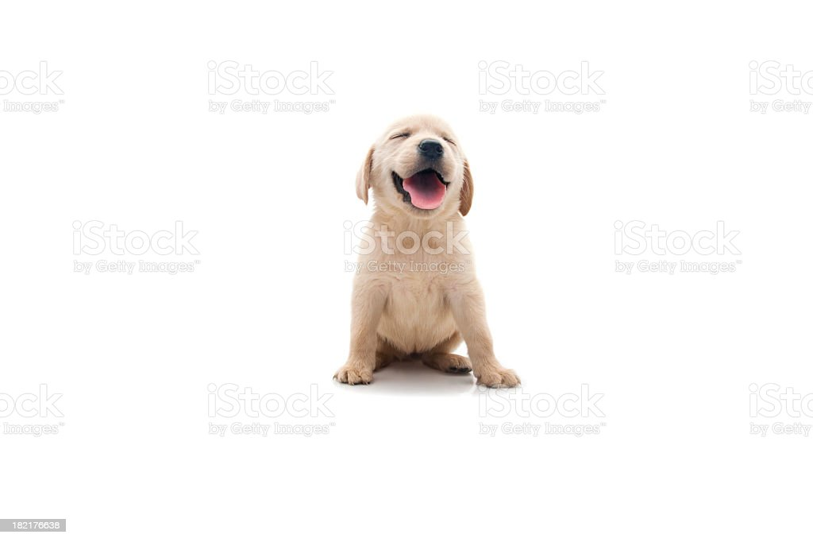

以毛泽东同志为主要代表的中国共产党人，把马克思列宁主义的基本原理同中国革命的具体实践结合起来，创立了毛择东思想。 毛泽东思想是马克思列宁主义在中国的运用和发展，是被实践证明了的关于中国革命和建设的正确的理论原则和经验总结， 是中国共产党集体智慧的结晶。中国共产党领导全国各族人民，在中国共产党的指引下，经过长期的反对帝国主义。封建主义。 官僚资本主义的革命斗争，取得了新民主主义革命的胜利，建立了人民民主专政的中华人民共和国;建国以后，顺利地进行了社会主义改造， 完成了从新民到社会主义的过渡，确立了社会主义制度，使中国的经济、政治和文化步入了世界水平。
